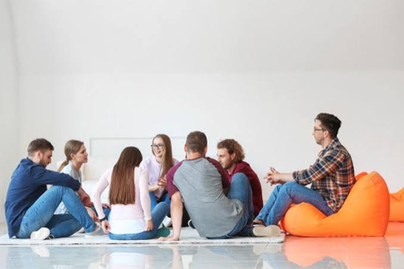

artikel
deskripsi
dalam Bersosialisasi
- Perbedaan budaya dan latar belakang bisa menjadi penghalang dalam komunikasi.
- Teknologi dan media sosial dapat memperluas atau membatasi sosialisasi secara langsung.
- Individualisme yang tinggi dalam masyarakat modern bisa membuat seseorang kurang aktif bersosialisasi.
- Stigma dan diskriminasi juga dapat membatasi akses seseorang dalam berinteraksi dengan kelompok sosial tertentu.
Pengertian Bersosialisasi
Bersosialisasi adalah proses interaksi sosial yang dilakukan individu dengan individu lain, kelompok, maupun masyarakat secara luas, untuk membentuk hubungan sosial, menyesuaikan diri dengan norma-norma, dan membangun identitas diri dalam kehidupan sosial. Bersosialisasi bukan hanya sekadar berkomunikasi, tetapi juga melibatkan proses pembelajaran, adaptasi, dan pembentukan kepribadian.
Tujuan Bersosialisasi
Tujuan utama bersosialisasi adalah agar individu dapat menjadi bagian dari masyarakat dan dapat hidup secara harmonis dengan orang lain. Melalui proses ini, seseorang belajar:
- Norma dan nilai yang berlaku di masyarakat
- Perilaku yang diterima secara sosial
- Bahasa dan simbol yang digunakan dalam berkomunikasi
- Peran-peran sosial, seperti menjadi anak, siswa, pekerja, atau warga negara
Jenis-jenis Sosialisasi
- Sosialisasi Primer
- Sosialisasi Sekunder Terjadi setelah individu memasuki lingkungan sosial yang lebih luas seperti sekolah, lingkungan kerja, atau organisasi. Individu belajar menyesuaikan diri dengan aturan dan budaya yang lebih kompleks.
- Sosialisasi Formal
- Sosialisasi Informal
Terjadi pada masa kanak-kanak melalui keluarga. Anak belajar dasar-dasar kehidupan sosial, seperti bahasa, tata krama, dan nilai moral.
Dilakukan secara terstruktur melalui lembaga-lembaga seperti sekolah, militer, atau organisasi resmi dengan aturan dan tujuan tertentu.
Terjadi secara spontan dan tidak terstruktur, misalnya melalui pertemanan, media sosial, atau lingkungan sekitar.
Kita perlu bersosialisasi karena manusia adalah makhluk sosial yang secara alami membutuhkan interaksi dengan orang lain untuk bertahan hidup dan berkembang. Berikut beberapa alasan penting mengapa kita perlu bersosialisasi:
- Menjaga Kesehatan Mental
- Meningkatkan Keterampilan Sosial
- Membangun Jaringan dan Kesempatan
- Meningkatkan Kesehatan Fisik Interaksi sosial yang aktif dapat memperkuat sistem kekebalan tubuh, menurunkan tekanan darah, dan mengurangi risiko penyakit jantung. Dukungan sosial juga berperan penting dalam proses pemulihan dari penyakit.
- Mendukung Pertumbuhan Pribadi
Bersosialisasi dapat mengurangi perasaan kesepian, stres, dan kecemasan. Interaksi sosial yang positif membantu meningkatkan suasana hati dan memberikan dukungan emosional yang penting bagi kesejahteraan psikologis.
Melalui interaksi dengan berbagai orang, kita belajar cara berkomunikasi, memahami perasaan orang lain, dan menghargai perbedaan. Keterampilan sosial ini sangat penting dalam kehidupan sehari-hari, baik dalam konteks pekerjaan, pendidikan, maupun kehidupan pribadi.
Bersosialisasi membantu kita membangun jaringan sosial yang luas, yang dapat membuka peluang dalam berbagai aspek kehidupan, seperti karier, pendidikan, dan kegiatan sosial. Jaringan ini juga memberikan dukungan saat menghadapi tantangan hidup.
Bersosialisasi memungkinkan kita untuk belajar dari pengalaman orang lain, mendapatkan perspektif baru, dan mengembangkan empati. Hal ini berkontribusi pada pembentukan identitas diri dan peningkatan kualitas hidup secara keseluruhan.
vidio
Sosialisasi adalah suatu proses sosial yang dialami seseorang atau kelompok untuk belajar mengenali serta menghayati pola perilaku, sistem sosial terkait nilai, dan norma yang berlaku dalam masyarakat, tujuannya dengan sosialisasi yang terbentuk individu dapat berkembang menjadi pribadi yang diterima oleh masyarakat.
foto
Gambar di atas adalah gambar orang tang sedang berinteraksi dalam sebuah kelampok atau opraganisansi